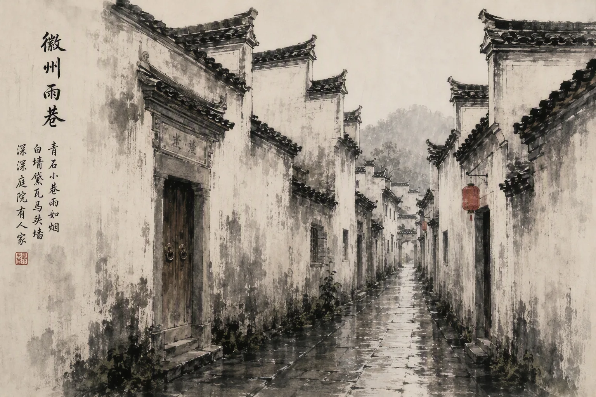
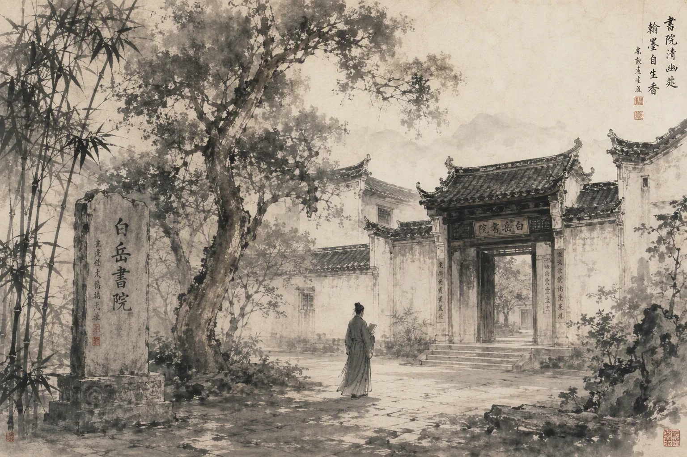

油菜花海
三月，江岭万亩梯田尽黄，粉墙黛瓦浮于花上，云雾未散时最好。
江岭 · 篁岭 · 庆源徽 州 · 一 府 六 县
以婺水之源而名
唐开元二十八年建县，宋属徽州
一生痴绝处
— 明 · 汤显祖
无梦到徽州
婺源在江西已近九十年，可它的乡音、祠堂、粉墙黛瓦与马头墙，仍旧是徽州的。
宋宣和三年，歙州易名徽州，辖歙县、休宁、婺源、祁门、黟县、绩溪，谓「一府六县」。此后八百年，赋税同缴、文脉同源、商帮同行、宗族同谱。直至民国二十三年，一纸军令将婺源划入江西；三十六年「回皖运动」曾短暂复归；一九四九年五月，再入江西，遂成今日格局。
行政的界，划得动山川，划不动人心。徽州于婺源，不是一段旧籍贯，而是一种至今仍在呼吸的方式——它在祠堂的梁上，在歙砚的石纹里，在冬夜火桶边的一句土话中。
此页作卷首，其后五卷，分记建置、文华、人物、山水、舆地。
一千二百八十余年，县名未改，所属六易。

析休宁回玉乡、乐平怀金乡置婺源县，属歙州。得名「婺水之源」，一说取婺女星分野。
歙州改称徽州，婺源为一府六县之一。自此至清末，凡八百年，婺源皆徽州属邑。
贾而好儒，富而重教。木材、茶叶、墨砚出山，银钱、书籍、匠人入乡。「一村一祠、一族一谱」自此成形。
因军事「剿共」区划之需，婺源自安徽划归江西。一府六县，自此缺其一角。
婺源士民发起「回皖运动」，历时数年，终获准复归安徽。乡人谓之「返徽」。
再划江西，隶属上饶。行政归赣，风俗归徽——此后所有的乡愁，都从这一年起算。
徽州文化的一支，长在婺源的山里：理学、三雕、砚墨、茶与傩。
山里读书，出山做事——婺源人的两条路，走了一千年。

森林覆盖逾八成。一年四色，各有其时。
三月，江岭万亩梯田尽黄，粉墙黛瓦浮于花上，云雾未散时最好。
江岭 · 篁岭 · 庆源古樟蔽日，溪水见底。山溪鱼、荷包红鲤与整村的蝉声，构成婺源的夏天。
卧龙谷 · 大鄣山 · 溪头十一月，篁岭人家把辣椒、皇菊、稻谷摊在竹晒盘上，从窗口一直挑到屋顶。
篁岭 · 石城 · 长溪鸳鸯湖为世界野生鸳鸯重要越冬地之一。冬水清寒，成双浮岸，不畏人声。
鸳鸯湖 · 月亮湾全球极度濒危，已知繁殖种群仅见于婺源一带，每年春夏归来。它不认省界，只认这片林子——某种意义上，它比人更早明白婺源属于哪里。
江西东北隅，黄山余脉之南，三省之交。
属黄山—怀玉山余脉，境内山地丘陵为主，古语「八分半山一分田，半分水路和庄园」。大鄣山为北障，与安徽休宁、黟县分水。
星江、乐安河汇流西去，经饶河入鄱阳湖，属长江流域。水向西流，是婺源与皖南在地理上的一处分别。
北接安徽休宁、黟县，东邻浙江开化，西连德兴、景德镇，南通上饶。徽饶古道自此翻山，商与书都由这条路出去。
亚热带季风气候，雨热同季，年雾日多。湿气蓄于谷中，故山常青、茶常润、瓦常苔。
山川不改其形
— 婺源，徽州东南隅
乡音不易其调
三十万人的县，一年接待三千六百万人。这一卷只写有据可查的部分。
以上四项据婺源县 2025 年国民经济和社会发展统计公报。农村居民人均可支配收入为 23,398 元，城乡之比约 1.67 比 1。
从前出县得先坐几个钟头汽车到景德镇或黄山转车。2015 年合福高铁通车，婺源第一次有了铁轨——而 2023 年贯通的昌景黄，不设婺源站。
一号公路把路面标线做成黄白红蓝四色，缠在山腰上；95 联盟大道全长 1995 公里，把婺源与黄山放回同一条线。
「全域」的意思是环卫车要开到山里的村口，排污管要埋到老宅底下。名号是资源，也是约束。
城乡收入差 15,751 元。一栋老宅改成民宿要动天井、厢房、水电，而马头墙和砖雕不能动。
全年的账押在两段各不过数周的日子上。晒盘上摊的是辣椒、皇菊、玉米、南瓜、稻谷——先有需要，后有风景。
前六卷写已经发生的事。这一卷里的三道题，答案还没出来。
一户人家留在村里还是搬去县城，多半是孩子上学那年定下的。村子不是某天忽然空的，是按学年空的。
一场倒春寒，能削掉一个县大半年的生意。茶、林、手艺各有底子，但都不会在一个旺季里见效。
修一栋老宅，贵的不是砖瓦，是会做这活的人。钱谁出，房子将来听谁的，是同一个问题。
历史那一卷已写完
— 写它的人，是今天住在那里的三十万人
未来这一卷还空着